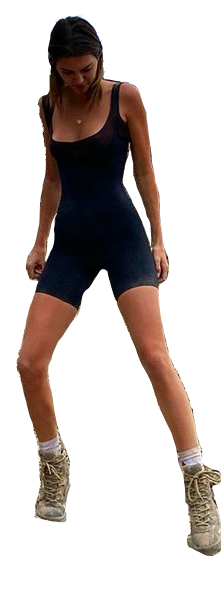
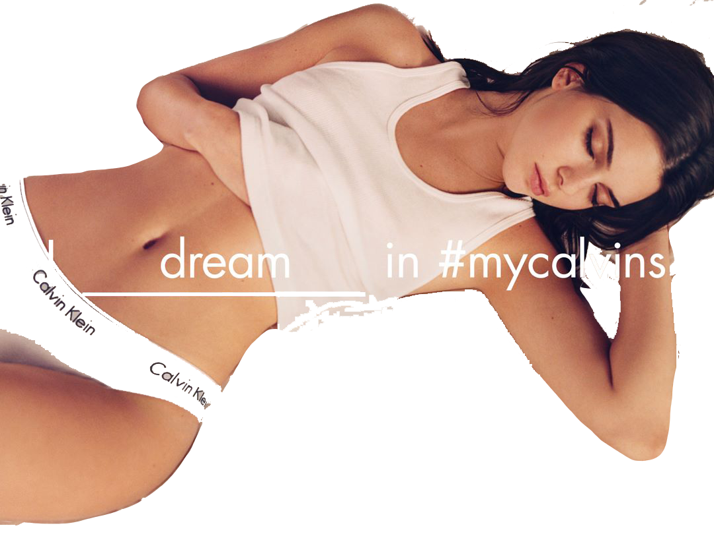
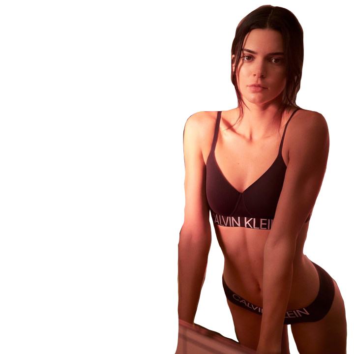
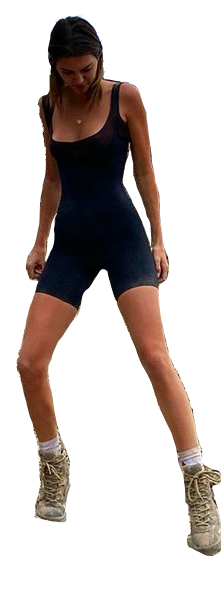
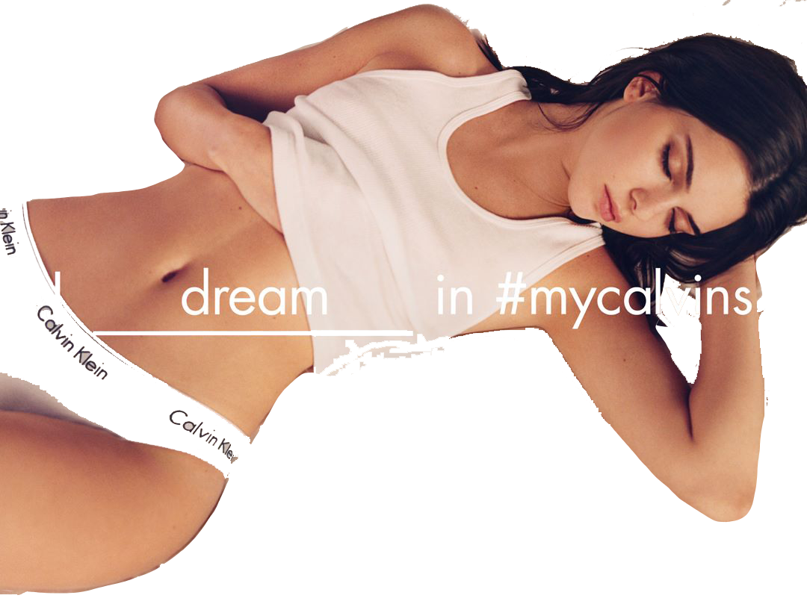
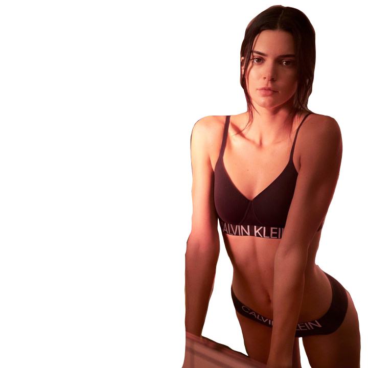
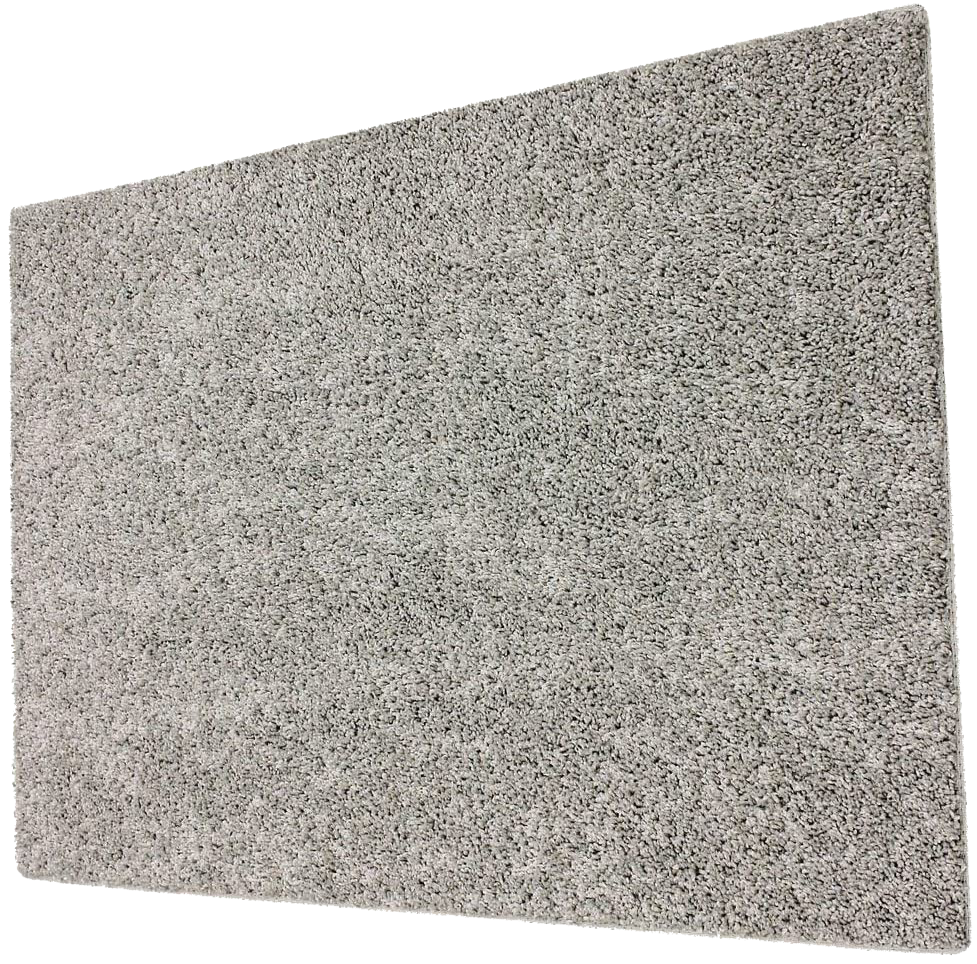
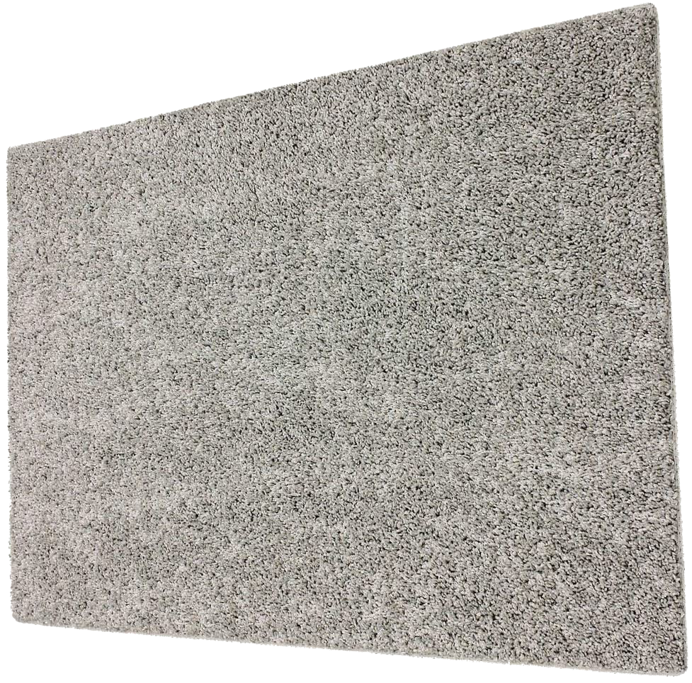

If things don't look right, you could try zooming in (command +) or out (command -).
On most screen sizes, it's easiest to read/navigate if you full-screen your window at 80% zoom level.
There are some sound effects, but not too many.


 
